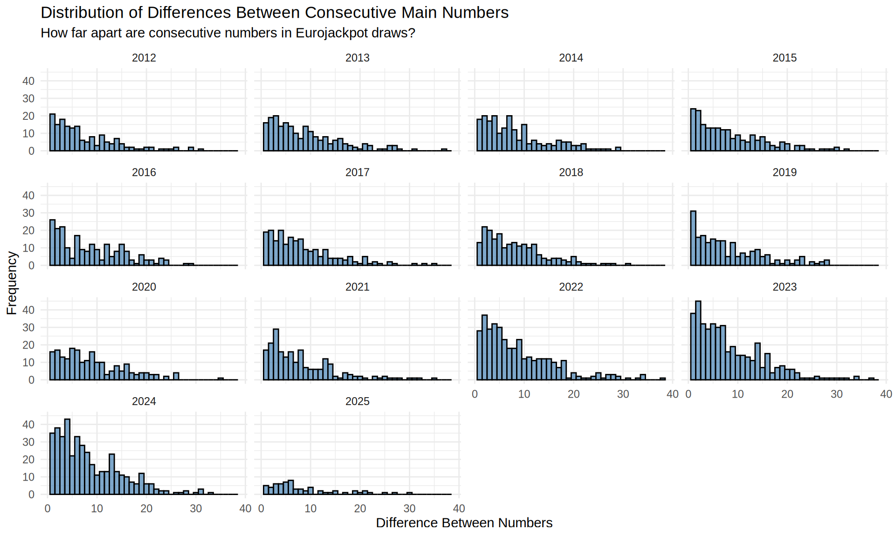
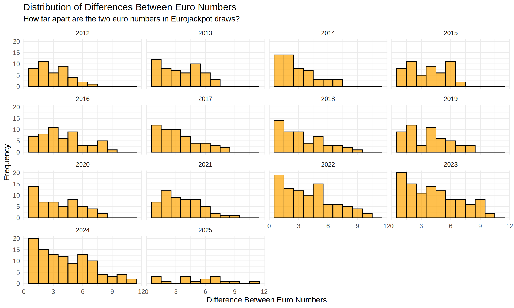
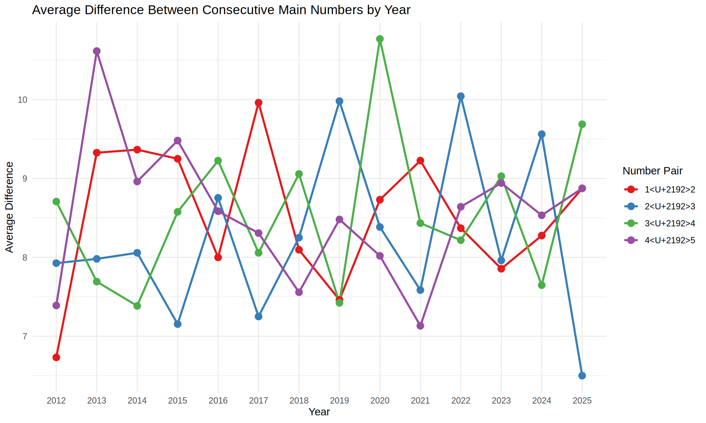
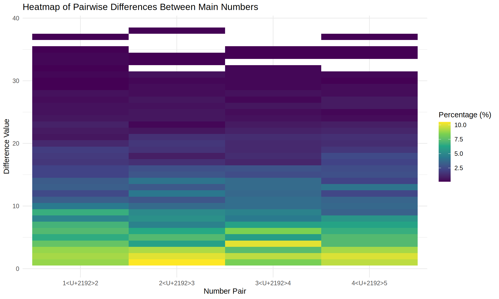
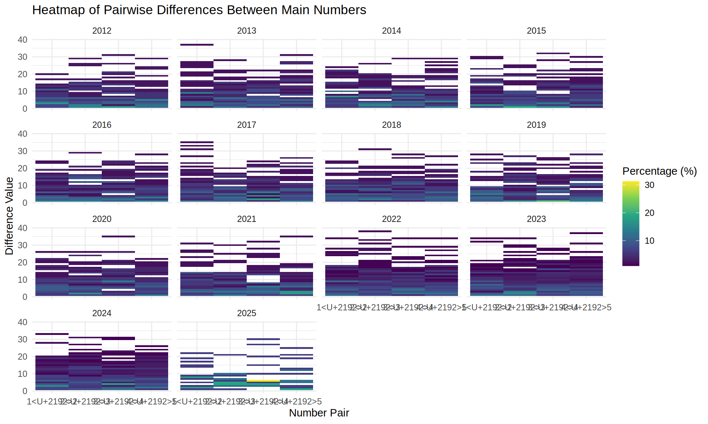

# Calculate pairwise differences between consecutive numbers
# For main numbers
main_diffs <- results %>%
mutate(
diff_1_2 = main_2 - main_1,
diff_2_3 = main_3 - main_2,
diff_3_4 = main_4 - main_3,
diff_4_5 = main_5 - main_4
) %>%
select(draw_date, year, contains("diff_"))
# For euro numbers
euro_diffs <- results %>%
mutate(
diff_euro = euro_2 - euro_1
) %>%
select(draw_date, year, diff_euro)
# Reshape data for visualization
main_diffs_long <- main_diffs %>%
pivot_longer(
cols = starts_with("diff_"),
names_to = "pair",
values_to = "difference"
) %>%
mutate(pair = factor(pair,
levels = c("diff_1_2", "diff_2_3", "diff_3_4", "diff_4_5"),
labels = c("1→2", "2→3", "3→4", "4→5")
))
# Visualize distribution of differences
ggplot(main_diffs_long, aes(x = difference)) +
geom_histogram(binwidth = 1, fill = "steelblue", color = "black", alpha = 0.7) +
facet_wrap(~pair, ncol = 2) +
labs(
title = "Distribution of Differences Between Consecutive Main Numbers",
subtitle = "How far apart are consecutive numbers in Eurojackpot draws?",
x = "Difference Between Numbers",
y = "Frequency"
) +
theme_minimal() +
facet_wrap(~year)
# Visualize difference between euro numbers
ggplot(euro_diffs, aes(x = diff_euro)) +
geom_histogram(binwidth = 1, fill = "orange", color = "black", alpha = 0.7) +
labs(
title = "Distribution of Differences Between Euro Numbers",
subtitle = "How far apart are the two euro numbers in Eurojackpot draws?",
x = "Difference Between Euro Numbers",
y = "Frequency"
) +
theme_minimal() +
facet_wrap(~year)
# Calculate average differences by year
yearly_avg_diffs <- main_diffs_long %>%
group_by(year, pair) %>%
summarise(
avg_diff = mean(difference, na.rm = TRUE),
median_diff = median(difference, na.rm = TRUE),
.groups = "drop"
)
# Visualize yearly trends
ggplot(yearly_avg_diffs, aes(x = year, y = avg_diff, color = pair, group = pair)) +
geom_line(size = 1) +
geom_point(size = 3) +
labs(
title = "Average Difference Between Consecutive Main Numbers by Year",
x = "Year",
y = "Average Difference",
color = "Number Pair"
) +
theme_minimal() +
scale_color_brewer(palette = "Set1")
# Create a heatmap of pairwise differences
heatmap_data <- main_diffs_long %>%
group_by(pair) %>%
count(difference) %>%
mutate(percentage = n / sum(n) * 100)
ggplot(heatmap_data, aes(x = pair, y = difference, fill = percentage)) +
geom_tile() +
scale_fill_viridis_c(name = "Percentage (%)") +
labs(
title = "Heatmap of Pairwise Differences Between Main Numbers",
x = "Number Pair",
y = "Difference Value"
) +
theme_minimal() +
theme(axis.text.x = element_text(angle = 0))
# Create a heatmap of pairwise differences
heatmap_data <- main_diffs_long %>%
group_by(pair, year) %>%
count(difference) %>%
mutate(percentage = n / sum(n) * 100)
ggplot(heatmap_data, aes(x = pair, y = difference, fill = percentage)) +
geom_tile() +
scale_fill_viridis_c(name = "Percentage (%)") +
labs(
title = "Heatmap of Pairwise Differences Between Main Numbers",
x = "Number Pair",
y = "Difference Value"
) +
theme_minimal() +
theme(axis.text.x = element_text(angle = 0)) +
facet_wrap(~year)